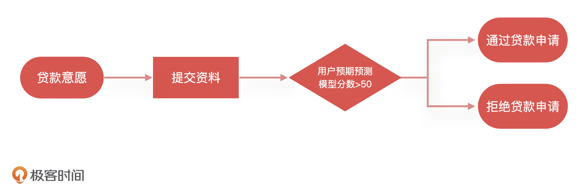
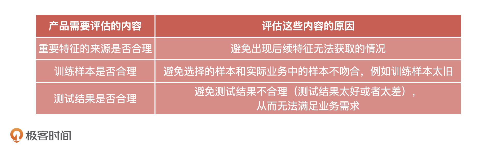
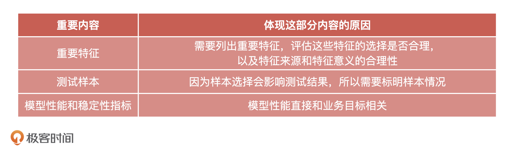

- 00 开篇词 你好，产品经理！你的未来价值壁垒在哪儿？.md.html
- 01 行业视角：产品经理眼中的人工智能.md.html
- 02 个人视角：成为AI产品经理，要先搞定这两个问题.md.html
- 03 技术视角：AI产品经理需要懂的技术全景图.md.html
- 04 过来人讲：成为AI产品经理的两条路径.md.html
- 05 通过一个 AI 产品的落地，掌握产品经理工作全流程.md.html
- 06 AI 模型的构建过程是怎样的？（上）.md.html
- 07 AI模型的构建过程是怎样的（下）.md.html
- 08 算法全景图：AI产品经理必须要懂的算法有哪些？.md.html
- 09 K近邻算法：机器学习入门必学算法.md.html
- 10 线性回归：教你预测，投放多少广告带来的收益最大.md.html
- 11 逻辑回归：如何预测用户是否会购买商品？.md.html
- 12 朴素贝叶斯：让AI告诉你，航班延误险该不该买？.md.html
- 13 决策树与随机森林：如何预测用户会不会违约？.md.html
- 14 支持向量机：怎么预测股票市场的涨与跌？.md.html
- 15 K-means 聚类算法：如何挖掘高价值用户？.md.html
- 16 深度学习：当今最火的机器学习技术，你一定要知道.md.html
- 17 模型评估：从一个失控的项目看优秀的产品经理如何评估AI模型？.md.html
- 18 核心技能：产品经理评估模型需要关注哪些指标？.md.html
- 19 模型性能评估（一）：从信用评分产品看什么是混淆矩阵？.md.html
- 20 模型性能评估（二）：从信用评分产品看什么是KS、AUC？.md.html
- 21 模型性能评估（三）：从股价预测产品看回归算法常用的评估指标.md.html
- 22 模型稳定性评估：如何用PSI来评估信用评分产品的稳定性？.md.html
- 23 模型监控：产品经理如何建设算法模型监控指标体系？.md.html
- 24 推荐类产品（一）：推荐系统产品经理的工作职责与必备技能.md.html
- 25 推荐类产品（二）：从0打造电商个性化推荐系统产品.md.html
- 26 预测类产品（一）：用户复购意向预测的底层逻辑是什么？.md.html
- 27 预测类产品（二）：从0打造一款预测用户复购意向的产品.md.html
- 28 预测类产品（三）：从0打造一款“大白信用评分产品”.md.html
- 29 自然语言处理产品：从0打造一款智能客服产品.md.html
- 30 AI产品经理，你该如何提升自己的价值？.md.html
- 31 AI产品经理面试，这些问题你必须会答！.md.html
- 春节加餐1 用户增长模型：怎么利用AI技术判断新渠道性价比？.md.html
- 春节加餐2 一次答疑，带你回顾模型评估的所有基础概念.md.html
- 期中周测试题 ，你做对了吗？.md.html
- 期中答疑 AI产品经理热门问题答疑合集.md.html
- 结束语 唯一不变的，就是变化本身！.md.html
- 捐赠
17 模型评估：从一个失控的项目看优秀的产品经理如何评估AI模型？
你好，我是海丰。今天，我们正式进入模型评估能力篇的学习。
在开始今天的课程之前，我想请你先想一想，你在工作中推进AI相关产品需求的时候，是不是经常会遇到这样的问题。
在算法模型上线阶段，你拿不准到底要不要验收算法同学交付的模型，就算你想要验收，你也不知道该怎么去评估模型的好坏，只能算法同学说什么就是什么，甚至对算法同学说的名词都没有概念，非常被动。
针对这个问题，这节课，我想和你分享一个我曾经踩过的坑。我会通过我处理这个事故的过程来和你详细讲讲，在推进AI相关项目的时候，我们该如何去评估一个模型，怎么化被动为主动。
问题复现：一个没有经过验收的金融大数据风控AI产品
我先来讲讲整个事情的背景。因为AI在金融领域的发展一直处于引领的地位，所以基于大数据的AI风控产品也层出不穷。我的团队主营业务就是给金融机构做AI大数据风控，开发一个信用评估模型，这个产品的功能就是基于借款人的留存信息，预测他未来是否可能会逾期还款。
金融机构在给借款人放款之前会通过系统调用我们这个模型，如果模型返回“逾期”，金融机构就会拒绝借款人的贷款申请，反之就通过这个借款人的申请。下面是一个最为简单的信贷申请流程样例：

本来，上线后模型表现一直还不错。但是突然有一天，我们的客户反馈，模型对所有借款人预测的结果都是“逾期还款”，当天所有借款人向这个客户提交的贷款申请全部被拒绝了，影响的金额巨大。这样的线上事故简直就是灾难，直接导致我们客户的线上业务全部停滞。
于是，我和几个核心人员紧急开会讨论。最后发现，模型全部返回“逾期”是因为，算法工程师在模型中引用的一个重要特征突然全部返回空值。后来，算法同学紧急调整了模型代码并重新上线才解决了问题。问题虽然解决了，模型的预测效果却下降很多，也给金融机构造成了极大的损失。
事故复盘：我们犯的三个错误
事后，我和我的团队按照模型的上线时间线，组织了事故复盘，找到了造成这次事故的问题，主要有三个，我一个一个来说。
第一：模型上线前无评估。当模型构建完成后，没有经过产品经理验收，导致这个问题没有被提前发现。
第二：模型上线后无监控。当模型在上线之后，大家都没有对模型进行监控，所以模型出现问题我们没有及时发现。直到模型结果影响到客户，被客户发现了。最终，不但给客户造成了极大的损失，也让客户对我们的技术能力产生了怀疑。
第三：特征无评估、无监控。我们说过，一个模型的训练包含了很多特征，这些特征加上算法组合成了最终的模型，所以对于模型特征的评估就很重要了。
在此次事故中，算法同学没有评估这个特征稳定性就贸然引入了它，而且，它在模型中还占有很高的比重，这就导致模型对该特征依赖性过强。再加上模型上线后，算法同学没有对模型的特征数据进行监控，所以这些特征数据出现问题以后，整个模型都失效了。
流程优化：增加模型宣讲和模型评估节点
通过刚才的复盘，我想你可以看到，整个过程中产品经理是缺位的。产品经理对于算法同学训练的模型没有能力评估，算法同学说什么就是什么，根本无法把控产品的质量。最后的结果就是产品经理变成了传话筒，交付的产品也不可控，最终就给这次事故埋下了隐患。
因此，模型的评估是我们必须要做的事情，但是该怎么做呢？接下来，我带你看看我当时是怎么做的，然后帮助你梳理出一个完整的流程，希望你能把这些经验好好利用起来。
第一步：改流程，增加单独的模型宣讲和评估节点
我先修改了原有流程，增加了模型宣讲和评估的节点。原来的流程是，算法同学完成模型训练之后，由工程同学进行模型的上线，之后测试同学介入测试，产品经理再做最后的验收，整个流程都和传统互联网产品的上线流程一致。
这样做看似没有问题，但是会存在两个弊端。
第一，模型问题发现时间太晚。如果模型构建完成之后不进行评估，而是等工程上线之后，测试或者验收阶段才发现模型有问题就太晚了。这个时候，我们再去调整模型大概率会影响产品上线时间。毕竟大多数时候，模型的调整比研发修复Bug要麻烦得多。
第二，容易导致评估范围不完整。产品上线之后验收，大家很自然就会更加关注业务指标，容易忽略模型本身的指标，比如在上面的例子中，我们只关注模型性能表现但没有去评估模型特征的稳定性，特征一旦失效就让整个产品出现了问题。
针对这两个问题，我的解决办法是：制定新的流程，在模型构建完成之后，必须要经过模型宣讲和模型验收两个环节，只有模型验收通过之后，才可以进行后续的工程上线工作。
下面，我再具体说一说这样改造流程的目的。
首先，我为什么要增加模型宣讲环节？这是因为，模型本身是一个偏黑盒的产物，它不像一般的互联网产品，有页面、有结果，产品经理可以通过页面功能去评估工程师的产出是否满足需求。所以，要由算法同学先给产品经理讲解清楚模型的加工逻辑，这样产品经理才可以进行后续的验收评估工作。
其次，为什么单独增加模型验收环节？这是因为，在模型构建完成之后立刻进行验收，有助于提早发现问题，以免影响最后的产品上线。
第二步：定标准，定义评估节点内容和交付物
流程调整之后，我又和算法同学一起讨论了模型宣讲和模型评估两个环节的人员分工和交付物，确定了我们在这两个节点上的工作标准。
1.模型宣讲环节的工作内容和交付物
首先，在模型宣讲前，算法同学需要给产品经理提供一份模型报告。报告中需要包括模型设计、算法选型、特征筛选，验证结果等内容。产品经理看过模型报告之后，再组织算法同学进行模型宣讲。
其次，在模型宣讲中，产品经理要有目的地去了解算法逻辑。在这个过程中，我会要求算法同学帮忙说明，这个模型使用了什么算法和选择这个算法的原因，这个模型选择了哪些重要特征，训练的样本，以及算法同学的测试方案与结果。
具体来说就是，产品经理需要根据算法同学提供的模型报告，对AI产品影响比较大或者是模型同学容易忽略的三个点进行评估，它们分别是重要特征的来源、训练样本的合理性，以及测试结果是否符合业务预期、是否合理。
那为什么要对这三点进行评估呢？我在下面总结了一张表格，你可以先去看看。至于评估的具体方法我会在模型评估环节来讲。

总的来说，模型宣讲环节相当于是产品经理给模型上线设立的第一道门槛。针对算法同学给到的模型报告，我们要弄清楚它的算法方案，同时，借助对上面这三点的粗略评估，判断模型的特征、样本、测试方案和结果是否合理。通过这次评估之后，我们就可以把模型报告归档，进入到模型评估环节了。
2.模型评估环节的工作内容和交付物
在模型评估环节，产品经理需要做的是，根据业务需求挑选合适的测试样本，请算法同学进行测试，并且提交测试结果。最后，再根据模型宣讲和测试的内容编写模型验收报告。
我在下面给出了一个模型验收报告的例子，虽然，不同业务场景下的评估内容可能不同，但你完全可以进行参考。
我们的模型验收报告主要有三个部分，分别是重要特征，选择的测试样本，具体的模型性能和稳定性的测试结果。选择体现这三个部分是因为，它们对我们模型稳定性的影响比较大，有时候会直接影响我们的业务指标。
这个时候，有的同学可能会问，“老师，这三个部分是不是已经包含了模型宣讲环节的评估呀？既然已经评估过了，为什么又要重新评估呢？”这是因为，宣讲环节的评估只是初步评估，让产品经理粗略地了解模型的结果能不能满足业务的诉求。到了这个环节，产品经理要站在业务的角度，更详细地对模型进行评估。
我们先来看重要特征部分。模型是由特征组成的，所以评估特征是必不可少的环节。在这个部分，我们需要列出重要特征，评估这些特征的选择是否合理。然后，我们要对每个特征的来源和特征意义进行合理性的评估。
针对特征来源，我们要考虑这个特征是外部接入的数据产生的特征，还是我们内部业务数据产生的特征，对于外部数据我们更需要关注数据的稳定性和可持续性。
针对特征意义，我们要考虑的是，这个特征的含义是否符合业务或者常理。比如，我们要用到夜间购物特征，但是这个特征时间点设置为23点到2点就不合理，一般应该设置成是0点到5点。
接下来是测试样本部分。因为同样的模型选择不同的测试样本，得到的结果就会完全不同，所以我们应该选择和实际业务场景相近的样本进行测试。
同时，在模型验收报告中，我们必须把选择的测试样本是哪些，以及为什么选择这些样本都一一说明。比如，在测试用户信用评分模型时候，我选择的样本是2019年10月到2020年4月的消费金融用户。原因是，本模型主要面向消费金融客群，产品为按月分期。这个时间段，这个客群已经有了信贷表现，所以我选择它们作为测试样本。
最后，也是最关键的，我们要去评估模型的性能和稳定性。模型性能直接和业务目标相关，如果模型性能达不到业务需要的标准，那么模型根本不具备上线条件。同时，模型稳定性也和业务需求直接相关，我们的业务场景就要求模型必须稳定的(PSI<0.2)。
具体来说，我们会分为四步去评估：
- 评估重要特征的性能测试结果是否符合预期，包括特征 IV、KS 等等；
- 评估重要特征的稳定性，一般是PSI值；
- 评估模型性能测试结果是否符合预期，包括模型 KS、AUC、MSE 等等；
- 评估模型稳定性测试结果，一般也是PSI值。
以上，就是我们模型验收报告中需要包括的内容了。不过，这些内容需要根据实际业务情况进行调整，如果算法模型是一个回归模型，那么性能测试报告中就不需要包括KS、AUC这些指标。
说了这么多，我再带你总结一下，模型评估环节的验收报告中必须要体现的内容，如下表所示：

模型验收通过之后，就可以进入工程联调、上线和测试环节了。这和之前的流程一致，我就不再多说了。
总结
今天，我通过一个因为产品没有验收就匆忙上线而出现的事故，为你讲解了产品经理在模型评估上面的重要性以及我们的模型验收流程是怎么样的。希望你能根据我总结出来的验收流程，结合你的业务情况，形成你自己的验收方案。
为了帮助你形象地理解，我梳理了一张验收流程图，放在了下面。

了解了验收的流程，只是我们模型评估的第一步，但是具体到模型验收环节，产品经理要根据什么指标进行验收，你肯定还充满了疑问，这些内容我会在下节课和你详细讲解。
另外，在这次事故之后，我除了调整产品的上线流程之外，还组织搭建了模型监控系统。具体该如何搭建这个监控系统，监控系统需要观测哪些指标，我也会在后面和你分享。
课后讨论
我想听听你在做产品经理时候，遇到过哪些坑，你是怎么解决的。现在回过头再看，你会不会有更好的解决方式呢？
期待在留言区看到你的分享，我们下节课再见！
© 2019 - 2023 Liangliang Lee. Powered by gin and hexo-theme-book.